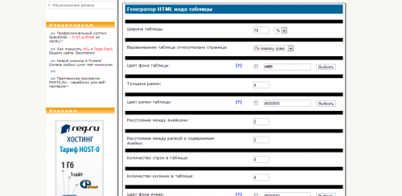

Создание таблицы в HTML
15.03.1453153
В языке разметки HTML таблицы используются не только для представления каких-либо данных в виде строк и столбцов, но и как средство форматирования страниц и задания расположения различных элементов.
Другими словами, в HTML оформление таблицы может быть вовсе не заметным, однако выполнять функцию каркаса, занимая всю веб-страницу.
Можно поместить, например, в её левый столбец меню, основную информацию в средний, а контактные данные — в правый.
Итак, как сделать таблицу в HTML?
Создадим простейшую таблицу, содержащую три ячейки одной строки с помощью приведенного ниже кода:
<body>
<table>
<tr>
<td>Столбец 1</td>
<td>Столбец 2</td>
<td>Столбец 3</td>
</tr>
</table>
</body>
В окне браузера только что созданная таблица выглядит следующим образом:
Таблица начинается с тега <table> и заканчивается парным ему </table>. Всё содержимое таблицы описывается сверху вниз по строкам, каждая из которых начинается с тега <tr> и заканчивается </tr>.
Ячейки строки описываются слева направо с помощью тегов <td> и </td>. В ячейку вы можете поместить как текст, так и графические файлы и даже другие таблицы.
Содержание
По умолчанию в таблице нет границы. Добавить её можно с помощью атрибута border тега <table>. Однако, иногда браузеры такую границу отображают по-разному, поэтому лучше данный процесс возложить на работу со стилями:
<body>
<table border="1">
<tr>
<td>Столбец 1</td>
<td>Столбец 2</td>
<td>Столбец 3</td>
</tr>
</table>
</body>
Для того чтобы указать фон ячейки таблицы HTML, строки или отдельной ячейки, к тегам <table>, <td> и <tr> можно применить следующие параметры:
Для того чтобы изменить цвет текста в таблице HTML, необходимо использовать тег <font>.
Например:
<table border="1" bgcolor="green">
<tr height="40" bgcolor="blue">
<td><font color="white">Ячейка 1</font></td>
<td bgcolor="red"></td>
</tr>
<tr>
<td background="http://t2.gstatic.com/images?q=tbn:ANd9GcRfByY7DCMopoeaahCdF4Yi7HWMo89lEYTZVJb4GAew7ZlZNiPW">Ячейка 3</td>
<td>Ячейка 4</td>
</tr>
</table>
В HTML отступы в таблице задаются с помощью тега <table>:
Например:
<table border="1" bgcolor="green" cellspacing="20" cellpadding="20">
<tr height="40" bgcolor="blue">
<td><font color="white">Ячейка 1</font></td>
<td bgcolor="red"></td>
</tr>
<tr>
<td>
background="http://t2.gstatic.com/images?q=tbn:ANd9GcRfByY7DCMopoeaahCdF4Yi7HWMo89lEYTZVJb4GAew7ZlZNiPW">Ячейка 3</td>
<td>Ячейка 4</td>
</tr>
</table>
Визуальное отображение данного кода в браузере таково:
Вы можете для каждой отдельной ячейки или строки задать два параметра, которые выполняют горизонтальное (align) и вертикальное (valign) выравнивание текста в таблице HTML.
Параметр align может иметь следующие значения:
Параметр valign может иметь такие значения:
Пример:
<table border= "1">
<td width="300" height="200">Текст 1</td>
<td width="300" height="200" align="right" valign="top">Текст 2</td>
</table>
Как сделать таблицу по центру в HTML? С помощью упомянутого значения center.
Например:
Яндекс.Директ Контроль за строительными работамиmrspro.ruДанные о ходе строительства в режиме реального времени всем участникам проекта.
Контроль за строительными работамиmrspro.ruДанные о ходе строительства в режиме реального времени всем участникам проекта.
<table cellpadding="0" cellspacing="0" width="100%" height="100%">
<tr>
<td align="center">
<table cellpadding="60" cellspacing="4" border="1">
<tr>
<td>
Текст таблицы
</td>
</tr>
</table>
</td>
</tr>
</table>
Вставка изображения в HTML таблицу
У вебмастеров часто возникает вопрос о том, как вставить картинку в HTML таблицу? Для того чтобы это осуществить, необходимо прописать адрес или имя изображения в соответствующей ячейке после тега <td>.
Например:
<table border= "1">
<tr align="left">
<td><img src="http://amadeya.users.photofile.ru/photo/amadeya/1288508/xlarge/42642197.jpg"></td>
<td> Содержимое 2 ячейки </td> </tr>
<tr align="right">
<td> Содержимое 3 ячейки </td>
<td> Содержимое 4 ячейки </td> </tr>
</table>
Дополнительными атрибутами в данном случае являются:
Кроме того, облачив изображение в специальный тег <a href="страница, на которую ведёт ссылка"><img src="имя файла.jpg"></a>, его можно использовать в качестве ссылки.
Объединение ячеек в HTML таблице
Соседствующие ячейки внутри одного столбца или строки можно объединить с помощью параметров rowspan и colspan тега <td>.
Объединение столбцов одной строчки выглядит так:
<table border="1">
<tr>
<td colspan="3">Текст 2</td>
</tr>
<tr>
<td>Текст 2</td>
<td>Текст 3</td>
<td>Текст 4</td>
</tr>
</table>
У HTML таблицы объединение ячеек одного столбца выглядит следующим образом:
<table border="1">
<tr>
<td rowspan="3">Текст 1</td>
<td>Текст 2</td>
</tr>
<tr>
<td>Текст 3</td>
</tr>
<tr>
<td>Текст 4</td>
</tr>
</table>
Яндекс.ДиректКонтроль за строительными работамиmrspro.ruДанные о ходе строительства в режиме реального времени всем участникам проекта.
Разумеется, создавать HTML таблицы можно самостоятельно, прописывая вручную все теги HTML. Таблица в данном случае рискует быть составленной некорректно, поскольку человеческий фактор при работе с большими объёмами информации даёт о себе знать.
Уже давно существуют специальные генераторы таблиц HTML, которые призваны сэкономить ваше время. С их помощью вы можете легко создать таблицу с множеством настроек.
Одним из наиболее распространенных генераторов таблиц является русскоязычный сервис http://rusws.ru/genertabtag. В его арсенале имеется множество настроек для построения таблиц: вы можете задать цвет фона, выравнивание, ширину таблицы, толщину рамки и т.д.

Несмотря на то, что сервис http://www.2createawebsite.com/build/table_generator.htmlявляется зарубежным, настроек для генерации таблицы здесь меньше, чем в предыдущем примере. Имеются лишь самые необходимые — количество столбцов, строк, ширина, размер, цвет границы.
Это — отличный вариант для генерации простейших таблиц, однако для более серьёзных целей рекомендуем воспользоваться другими сервисами:
Генератор таблиц html также имеет не слишком много настроек, однако цвет для фона и границы таблицы вы можете подобрать из палитры цветов.
Этот же сервис имеет довольно удобный HTML редактор, в котором можно построить, заполнить таблицу, а затем получить её код:
Таким образом, таблица является не только важным статистическим элементом во всех сферах жизни, но и неотъемлемой частью веб-дизайна и вёрстки.
Если вы решили воспользоваться услугами генератора таблиц, стоит внимательно подойти к выбору подходящего вам сервиса, опробовав самые популярные из них и выбрав наилучший.
Желаем успехов!
�